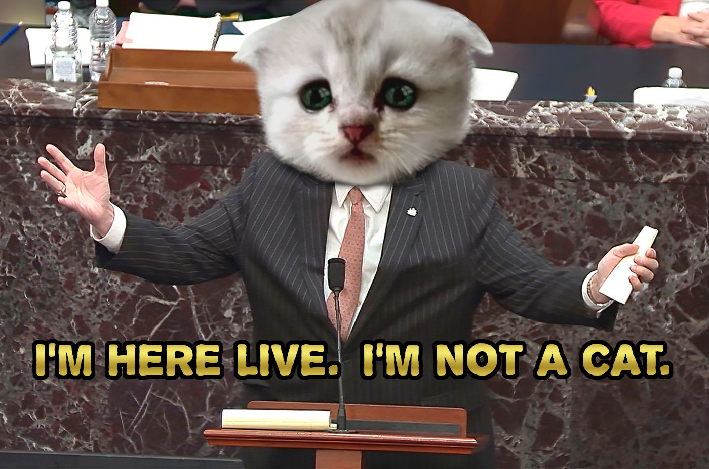

Hobbies
- Sports- One of my biggiest past times is getting involved in sports. The competetion and adrenaline help you forget the other stressor you may have in life. Even after playing for hours and getting exhausted, the break after is always very relaxing
- Arts- Another one of my hobbies is creating various forms of art. This involves creating music, taking interesting pictures, making something absurd on photoshop and so on.
About Me
I am a Interactive Media Design student currently in my first semester. I am very new to the back end of the computer. I have no prior knowledge of coding, but seeing as the world progresses it is becoming a more valubale skill. Not only in terms of employment opportunity but also in terms of understanding these devices we interact with every day.
A year that changed the planet, 2020 was a interesting one. As the year comes to an end I find myself reflecting on the pandemic, my honest thoughts are it was poorly handled by most governments. A pandemic at this scale is not unlikely with the global human lifestyle, some have said we were lucky the virus was not as deadly as some other viruses we have faced. Regardless, we have to take the matter seriously because the next virus may be worse and planning ahead can make a major difference in the outcome.
Most people overestimate what they can achieve in a year and underestimate what they can achieve in ten years - Bill Gates